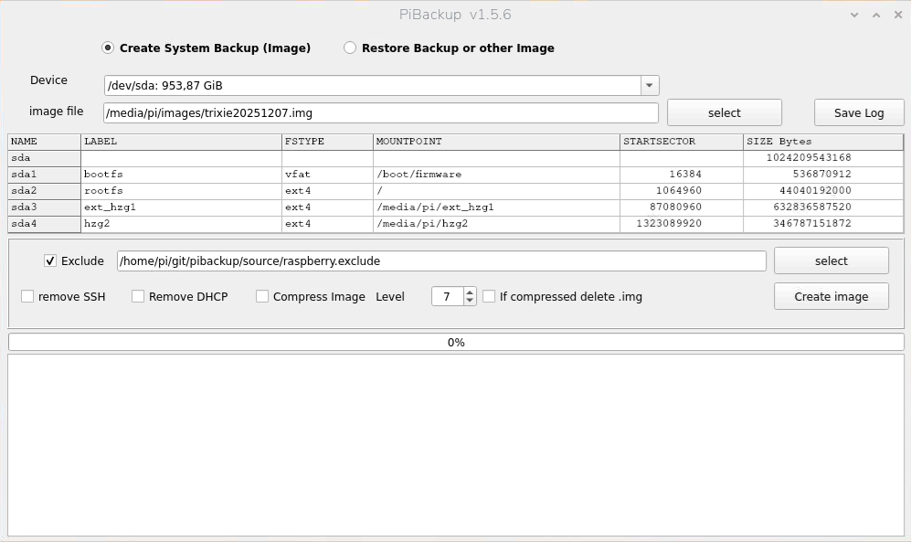

Raspberry Pi Backup – Main Features
With pibackup you can create a reliable Raspberry Pi backup on SD card, SSD, or HDD. Supports live backup of running systems including the first two partitions (/boot and /root).
For a full step-by-step guide, see the Raspberry Pi Backup & Restore Guide.
- Simple graphical interface
- 64-bit Linux application
- Automatic backup of the first two partitions (
/bootand/root) including MBR - Live backup support – backup running systems
- Exclude file support to remove unwanted data
- Optional removal of SSH and DHCP configurations
- Image shrinking with
resize2fsand compression with zstd - Backups saved as
.img.zst(optional) - Empty sectors filled with
0xFFfor better compression and security - Compatible with SD cards, SSDs, HDDs, USB drives, and NAS
Raspberry Pi Backup – Restore Options
With pibackup you can fully restore /boot and /root, including MBR (sector 0). The backup always covers from sector 0 to the end of the second partition. The final size of the /root partition can be adjusted via the live GUI before writing.
- Restore from
.imgor.img.zstdirectly - Enable SSH on first boot
- Set or change username and/or password
- Configure Wi-Fi – set or change SSID and password (PSK)
- Live preview of partition layout
- Optional deletion of existing partitions on target device
- Adjust
/rootpartition size via slider - Filesystem auto-resized to fit
Direct Installation
Download the latest release, extract the archive, and install the Debian package automatically:
```# Remove old temporary files, download latest release, unzip, and install ``` rm -rf /tmp/pibackup /tmp/pibackup.zip && \ wget -O /tmp/pibackup.zip "https://sourceforge.net/projects/pibackup/files/latest/download" && \ unzip -o /tmp/pibackup.zip -d /tmp/pibackup && \ sudo apt install -y "$(find /tmp/pibackup -type f -name 'pibackup.deb' -print -quit)" ```The installation uses the
/tmpdirectory, so no files remain in your home directory.
Raspberry Pi Backup – Screenshot

Download & Source Code
GitHub ProjectFAQ
How can I back up my Raspberry Pi SD card?
You can create a full Raspberry Pi SD card backup with pibackup. The tool supports live backup of running systems, so you do not need to shut down your Raspberry Pi.
How do I create a Raspberry Pi image backup?
With pibackup you can generate a compressed .img.zst image file of your Raspberry Pi. This backup can later be restored to the same SD card, a larger or smaller card, or even to an SSD or HDD.
Can I save my Raspberry Pi backup to USB or NAS?
Yes, you can store backups on external USB drives, SSDs, HDDs, or directly on network-attached storage (NAS).
Is pibackup an alternative to raspiBackup?
Yes. pibackup is a portable alternative to raspiBackup, offering a graphical interface, live backup capability, and modern zstd compression.
What is always backed up?
pibackup always backs up /boot and /root including the MBR. The backup covers everything from sector 0 to the end of the second partition.
How does restore work?
During restore, /boot and /root are fully restored, including the MBR. You can also enable SSH, change username and password, and configure Wi-Fi.
Can I adjust the root partition during restore?
Yes, you can adjust the size of the /root partition during restore. The live GUI shows a slider and partition layout preview so you can adjust sizes before writing the backup.